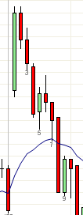

失败的1Rev可以变成1PB
https://ninetrans.blogspot.com/2011/08/failed-1rev-can-be-1pb.html
1Rev或OR需要出现在反转合理的位置。如果不是，它很可能失败。今天开盘的两K线反转可能是第一次反转，但如果不是，那么b3是试图给出第一次反转。

左边的三分钟图更清晰地展示了这一点。3分钟b5试图反转开盘的走势，但由于它不在任何反转合理的位置附近（如EMA或前一交易日的极值），所以失败了。
鉴于这是第一次尝试反转三根具有强势收盘的空头趋势K线，这可能在预料之中，但更重要的是，失败往往意味着它变成了原始方向上的1PB（3分钟b6）。当然，参与这个交易的风险在于第二次尝试和EMA非常接近。
然而，当在EMA处的第二次反转尝试（b7）没有被触发时，这就是对1PB的确认，反应迅速的交易者可能在b7下方做空。
在强势趋势日中，正确的入场走得远、走得快，真的没有拖延的余地。这就是为什么新交易者最好使用单一图表交易，专注于最佳入场。
幸运的是，今天我们确实得到了一个A2（b24），这在强势趋势中相对少见。考虑到K线的大小，在趋势线突破（b17-23）之后可以进行逆势交易。在正常大小的交易日中，fBO只应该沿着强势趋势的方向交易，因为任何逆势运动都可能失败或 无法盈利。